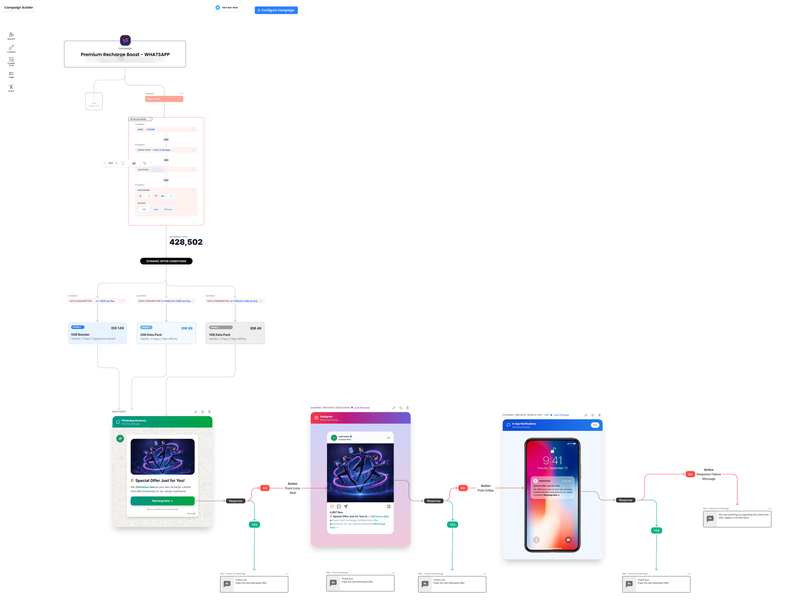
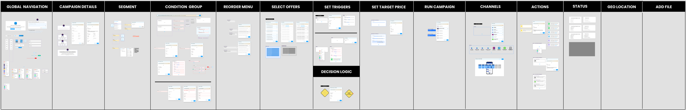
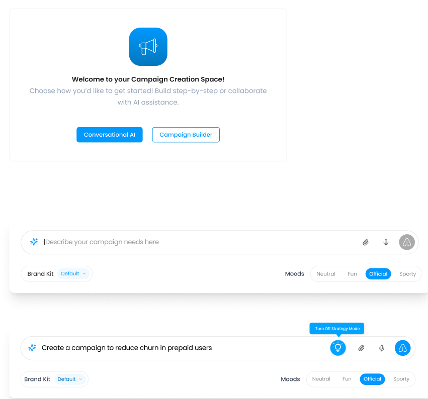
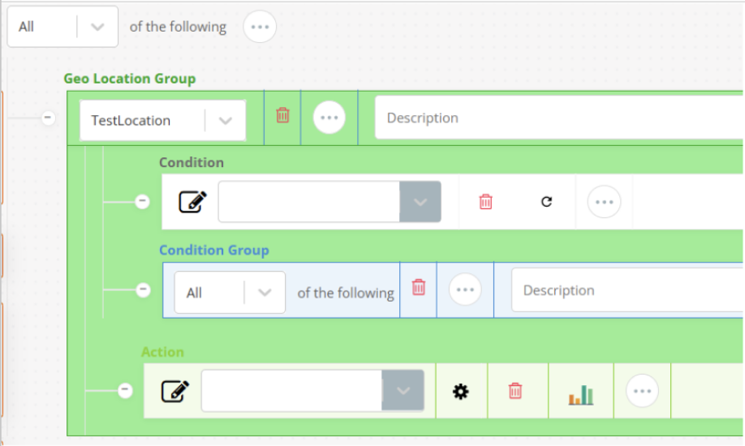
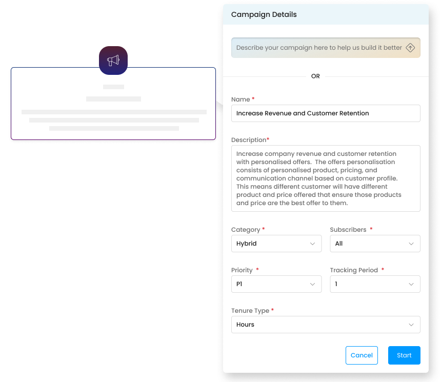
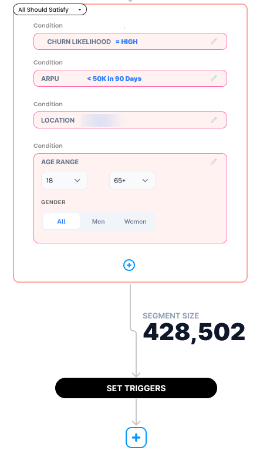
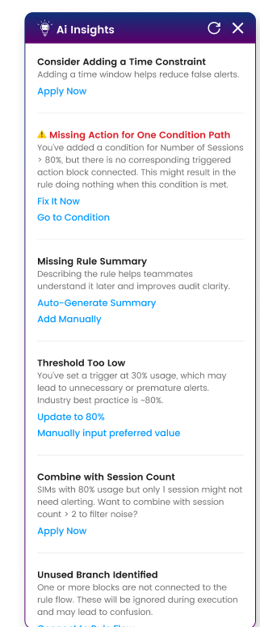
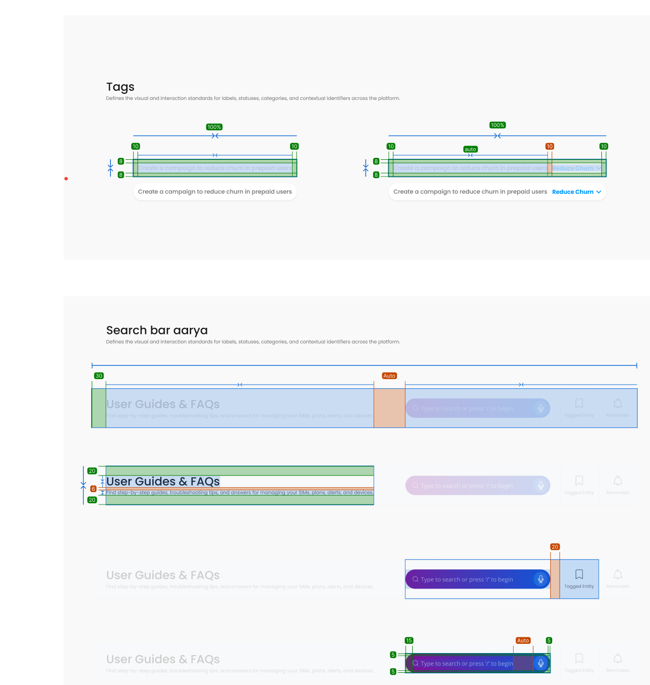

Case study · AI · Telecom
Magik: designing decisions,
not dashboards.
An AI campaign builder that lets telecom marketers go from a goal in plain words to a
live, multi-channel campaign.
- Role
- Product Designer
- Company
- 6D Technologies
- Timeline
- 2025 – now
- Users
- Telecom campaign managers

The final canvas: one campaign, from audience to offers to every channel, on a single screen.
30%less task time
30%faster campaign launch
4global operators
4continents
01 The problem
Problem 1
Data first, decision last
The insight was buried screens deep.
Problem 2
Manual, multi-step logic
Every campaign was built rule by rule.
Problem 3
AI without trust
Users couldn't see why, or catch mistakes.
How might we let AI do the analysis, while marketers keep the final say?
02 Research
- Stakeholder interviews
- Personas
- Competitor IA study
- AI-assisted desk research
- 01
Users think in goals, not metrics.
- 02
Interpreting data takes the most time.
- 03
Trust needs a visible “why”.
03 Mapping the product
I mapped every part of campaign creation into 14 modules before designing a single screen.

Feature map: navigation → details → segment → conditions → offers → triggers → price → run → channels → actions → status.
The new campaign flow
- Describegoal in plain words
- Audiencesegment + live size
- Offerdynamic, by behaviour
- ChannelsWhatsApp, social, app
- Responsesyes / no follow-ups
- Test runcheck before launch
One canvas, start to launch.
04 Decision-First framework
Before · data-first
- Open dashboards
- Read telemetry
- Filter & compare
- Build segment
- Pick offer & channel
- Decide
After · decision-first
- Describe the goal
- Check the why
- Approve or adjust
Six steps became three. The AI does the analysis in between.
05 How we solved it
Before Dozens of charts to interpret first.
→

After Type the goal, pick a tone. Or build step by step.
30% less task time

Before Legacy rule builder: nested groups, field by field.
→

After AI drafts the details on a visual canvas. Marketers edit.
30% faster campaign launch

Readable rules Plain conditions and a live audience size.
+

AI insights Flags gaps and risky settings, with one-click fixes.
Self-serve marketers build, audit & launch
06 Design system
A tokenized Figma system, specced down to the pixel so engineering builds it right the first time.
- Foundationscolour, type, spacing
- Tokenssemantic names
- Componentstags, inputs, AI search
- Patternscanvas, insights, channels
One system for the whole CVM suite.

Component specs with spacing redlines.
07 What I learned
- Design the decision before the data.
- Trust is a UX problem.
- Systems make speed possible.